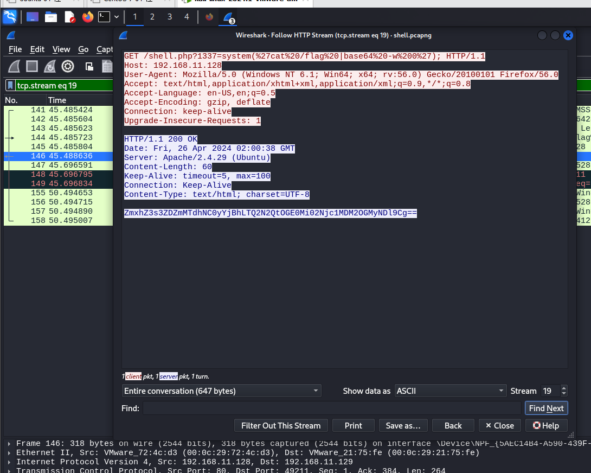
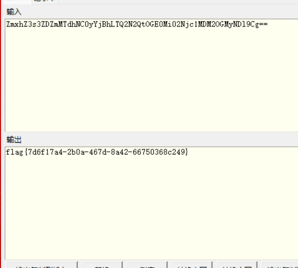
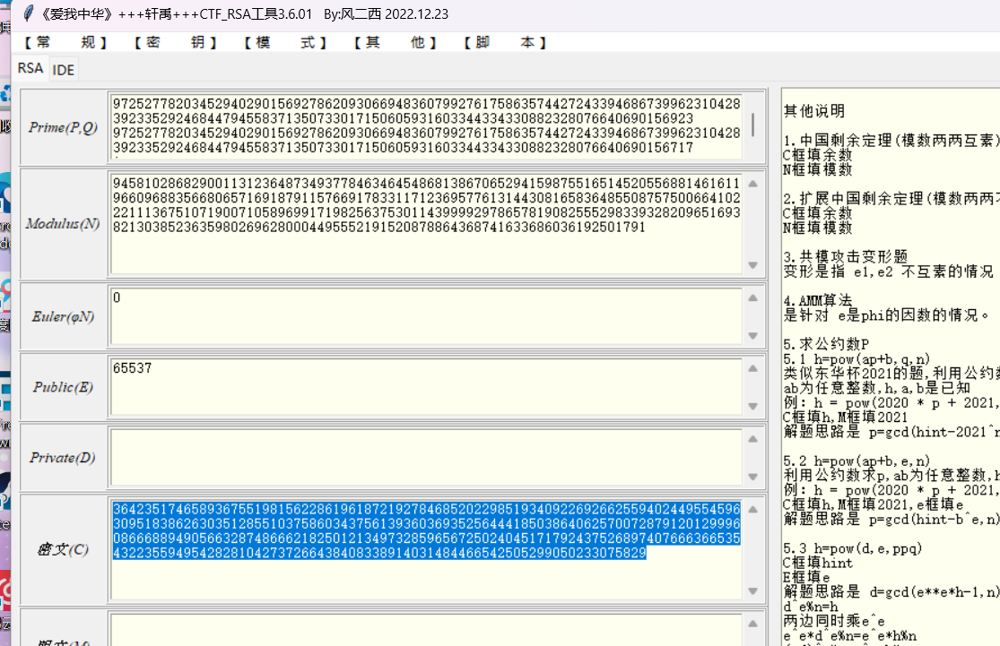
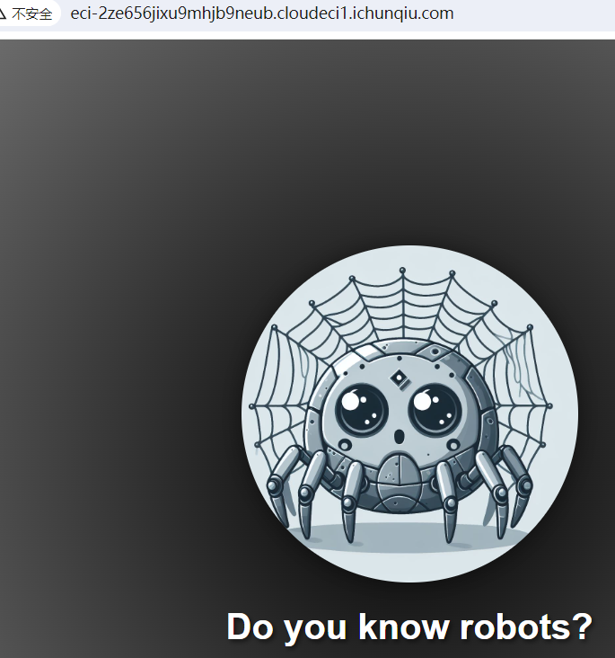
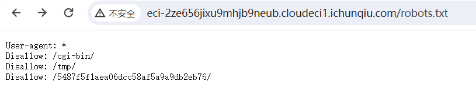
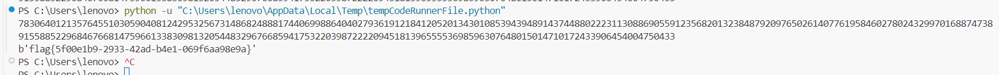
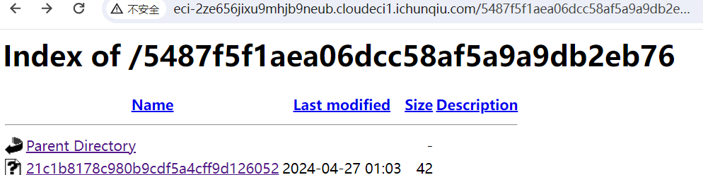
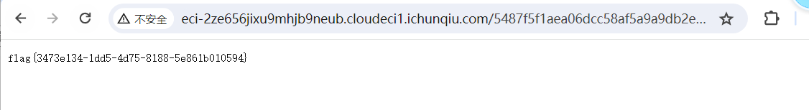
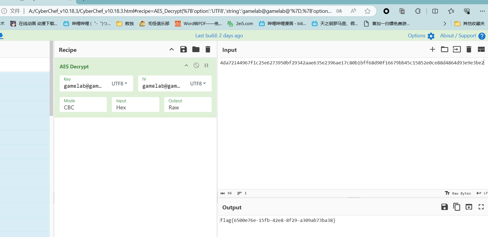

packet


Theorem — RSA 分解 n
分解 n

解密脚本
from Crypto.Util.number import *
from gmpy2 import *
import libnum
p = 9725277820345294029015692786209306694836079927617586357442724339468673996231042839233529246844794558371350733017150605931603344334330882328076640690156923
q = 9725277820345294029015692786209306694836079927617586357442724339468673996231042839233529246844794558371350733017150605931603344334330882328076640690156717
e = 65537
c = 36423517465893675519815622861961872192784685202298519340922692662559402449554596309518386263035128551037586034375613936036935256444185038640625700728791201299960866688949056632874866621825012134973285965672502404517179243752689740766636653543223559495428281042737266438408338914031484466542505299050233075829
n = 94581028682900113123648734937784634645486813867065294159875516514520556881461611966096883566806571691879115766917833117123695776131443081658364855087575006641022211136751071900710589699171982563753011439999297865781908255529833932820965169382130385236359802696280004495552191520878864368741633686036192501791
phi = (p - 1) * (q - 1)
d = inverse(e, phi)
print(d)
d = libnum.invmod(e, (p - 1) * (q - 1))
m = pow(c, d, n) # m 为十进制形式
string = long_to_bytes(m) # m 转字符串
print(string)
某种协议





Flag
